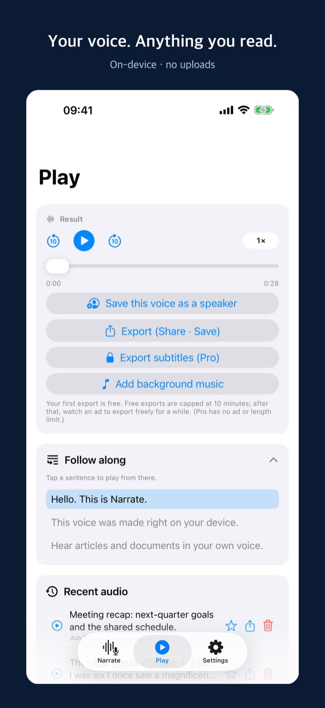
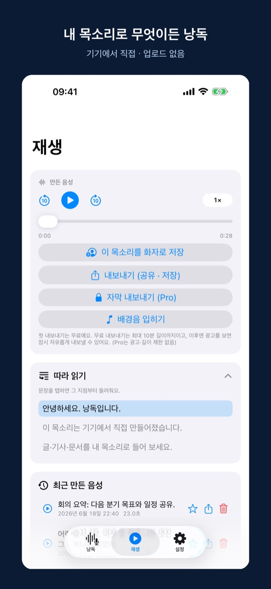
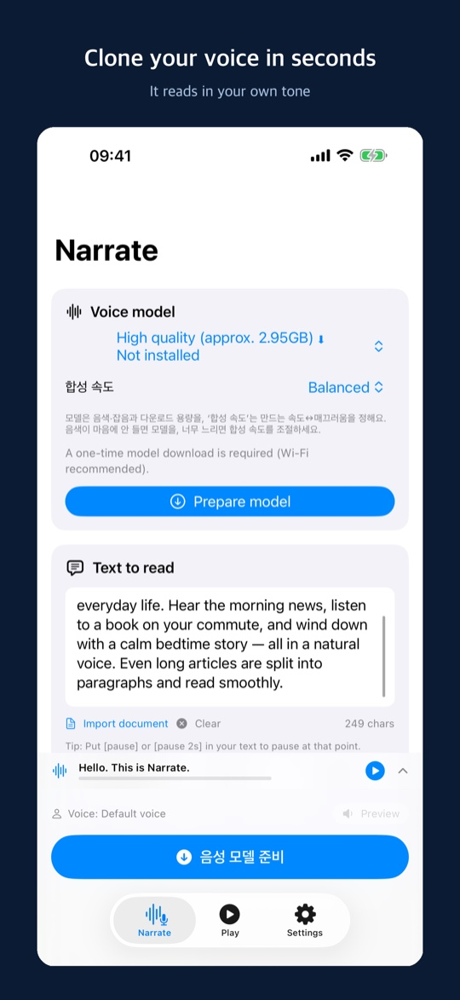
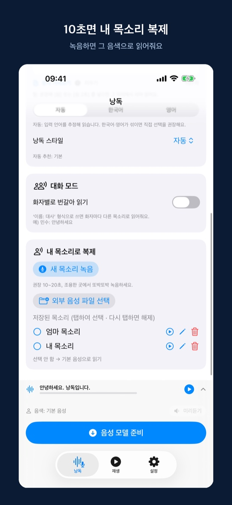
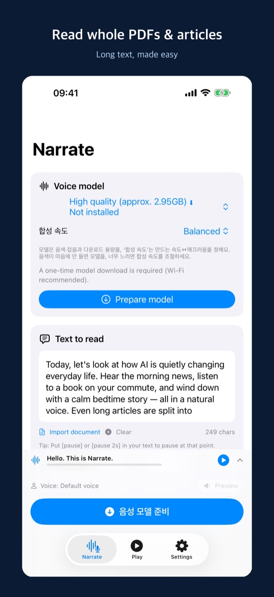
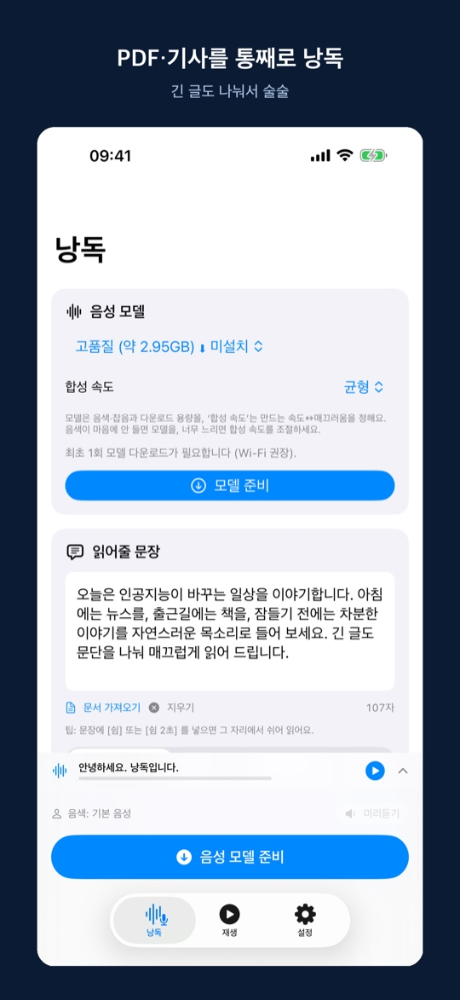

What is Narrate?Narrate란?Narrate 是什么？
Narrate turns written text into natural speech — optionally in a voice you record yourself. Everything runs locally using an on-device AI model, so it works offline once the model is downloaded and keeps your content private. Narrate는 글을 자연스러운 음성으로 읽어줍니다. 직접 녹음한 목소리로 복제해 읽게 할 수도 있습니다. 온디바이스 AI 모델로 기기에서 직접 동작하므로, 모델을 한 번 받으면 오프라인에서도 쓸 수 있고 내용이 외부로 나가지 않습니다.Narrate 能把文字读成自然的语音，也可以复刻你亲自录制的声音来朗读。它依靠端侧 AI 模型在设备上直接运行，因此模型下载一次后即可离线使用，内容也不会外传。
Fully on-device완전 온디바이스完全端侧
Synthesis runs on your device. No text or audio is sent to our servers.합성이 기기에서 처리됩니다. 글·음성을 서버로 보내지 않습니다.合成在设备上完成，文字与语音不会发送到服务器。
Voice cloning음성 복제声音克隆
Record 10–20 seconds and have text read in your own voice.10~20초 녹음으로 내 목소리로 읽게 합니다.只需 10~20 秒录音，就能用你的声音朗读。
Korean & English한국어·영어韩语·英语
Reads Korean and English, with automatic language detection.한국어·영어를 읽고, 언어를 자동 추정합니다.可朗读韩语与英语，并自动推测语言。
Export & share내보내기·공유导出·分享
Save generated audio as a file or share it.생성된 음성을 파일로 저장하거나 공유합니다.可将生成的语音保存为文件或分享出去。
See it in action화면 미리보기界面预览
A quick look at reading aloud, voice cloning, and composing — all running on your device. 읽어주기, 음성 복제, 글 작성까지 — 모두 기기에서 동작하는 모습입니다.朗读、声音克隆、文本撰写 — 全部在设备上运行的样子。






How it works사용 방법使用方法
Three quick steps — no account, no cloud upload. 계정 없이, 클라우드 업로드 없이 세 단계면 됩니다.无需账号、无需上传云端，三步即可完成。
Pick a voice음성 선택选择声音
Use the built-in voice, or record 10–20 seconds to read in your own.기본 음성을 쓰거나, 10~20초 녹음해 내 목소리로 읽게 합니다.使用默认声音，或录制 10~20 秒用你自己的声音朗读。
Type or paste text글 입력·붙여넣기输入或粘贴文字
Drop in an article, notes, a script, or a message — Korean or English.기사·메모·대본·메시지를 붙여넣으세요. 한국어·영어 모두 됩니다.粘贴文章、笔记、讲稿或消息。韩语与英语都可以。
Listen, save, share듣기·저장·공유收听·保存·分享
Tap “Read aloud”, then replay, export as a file, or share it.‘읽어주기’를 누르고 다시 듣거나, 파일로 내보내고 공유하세요.点按“朗读”即可重听，也可导出为文件并分享。
What you can do with it이렇게 쓸 수 있어요可以这样使用
Read articles hands-free기사·문서 듣기收听文章与文档
Turn long articles and documents into audio for your commute or while resting your eyes.긴 기사·문서를 음성으로 바꿔 이동 중이나 눈이 피로할 때 들으세요.把长文章、文档转成语音，通勤路上或眼睛疲劳时用耳朵听。
Study by ear귀로 공부用耳朵学习
Convert notes and study material to audio and review them anywhere.필기·학습 자료를 음성으로 만들어 어디서든 복습하세요.把笔记与学习资料做成语音，随时随地复习。
Personal audiobooks나만의 오디오북专属有声书
Listen to your own writing or saved text just like an audiobook.직접 쓴 글이나 저장한 텍스트를 오디오북처럼 들으세요.把自己写的文字或收藏的文本，当作有声书来听。
Easier reading편하게 읽기轻松阅读
Give your eyes a break — helpful for accessibility and reading fatigue.눈의 부담을 덜어줍니다. 접근성·눈 피로 완화에 좋습니다.减轻眼睛负担，有助于无障碍阅读与缓解视疲劳。
Narration for videos영상 내레이션视频旁白
Generate narration in your own voice for videos and clips.내 목소리로 영상·클립용 내레이션을 만드세요.用你的声音为视频与短片制作旁白。
Hear it in your voice내 목소리로 듣기用自己的声音收听
Read messages, greetings, or scripts back in a voice you recorded.메시지·인사말·대본을 녹음한 목소리로 들어보세요.把消息、问候语或讲稿，用你录制的声音听一遍。
Responsible use책임있는 사용负责任地使用
Only clone voices you have permission to use. Do not use generated audio for impersonation, misinformation, or fraud, and disclose that audio is AI-generated where appropriate. 사용 권한이 있는 목소리만 복제하세요. 생성된 음성을 사칭·허위정보·사기에 사용하지 말고, 필요한 경우 AI 생성 음성임을 밝혀 주세요.请只克隆你有权使用的声音。请勿将生成的语音用于冒充、虚假信息或诈骗，并在必要时标明这是 AI 生成的语音。
Get Narrate for iPhone & iPadiPhone·iPad에서 Narrate 받기在 iPhone 与 iPad 上获取 Narrate
Free to download. Narrate Pro is an optional subscription that removes export ads and unlocks importing external audio. 무료로 받을 수 있습니다. Narrate Pro는 내보내기 광고를 없애고 외부 음성 가져오기를 여는 선택형 구독입니다.可免费下载。Narrate Pro 是可选订阅，去除导出广告并开放外部音频导入。
Download on the지금 받기立即下载 App Store